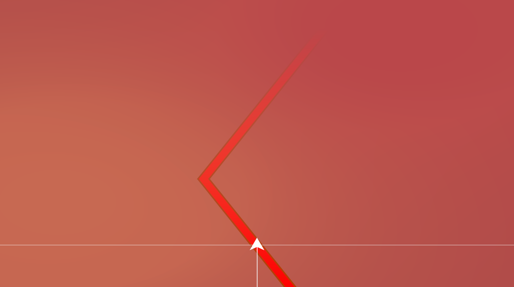
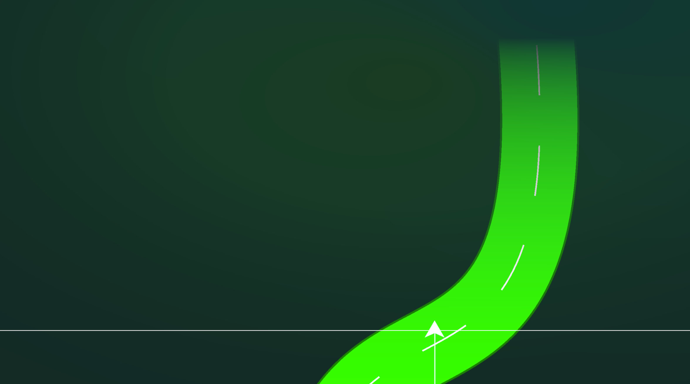
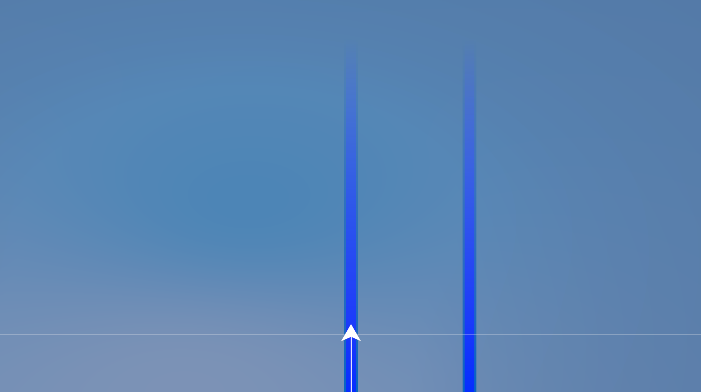
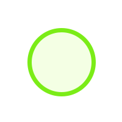
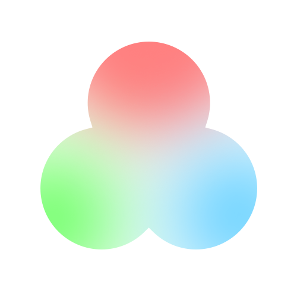
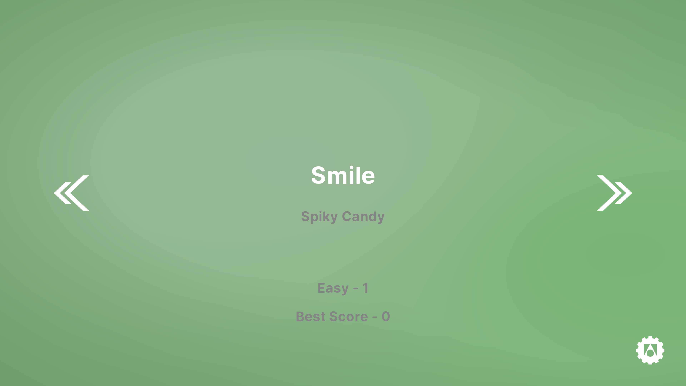
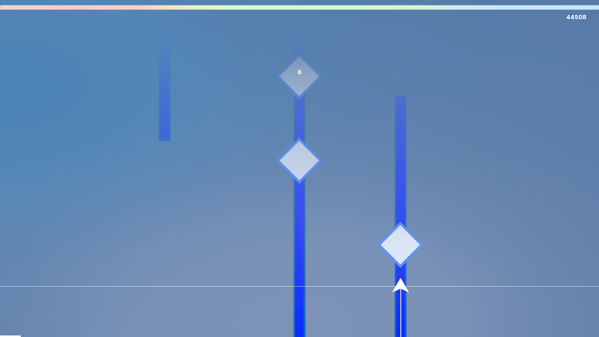
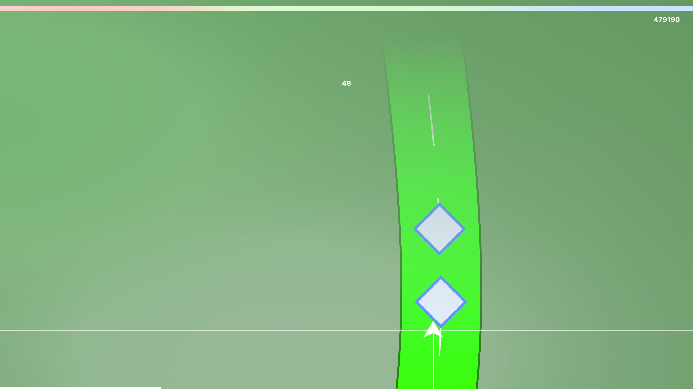
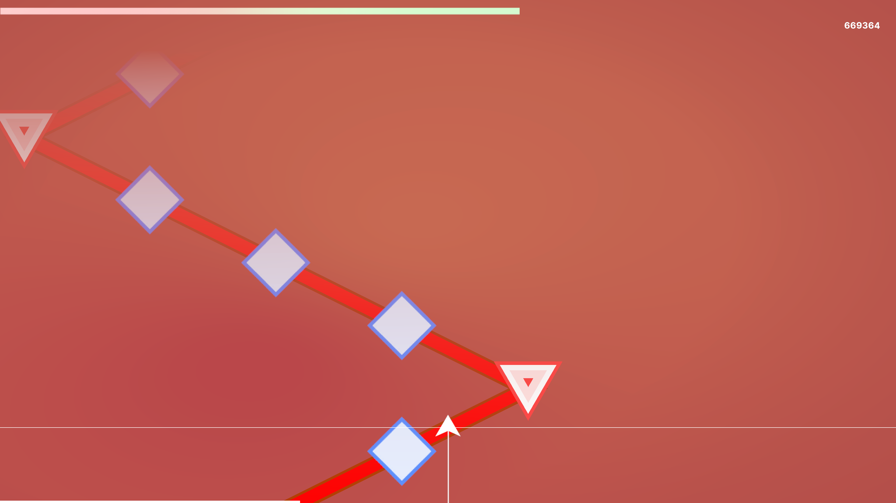
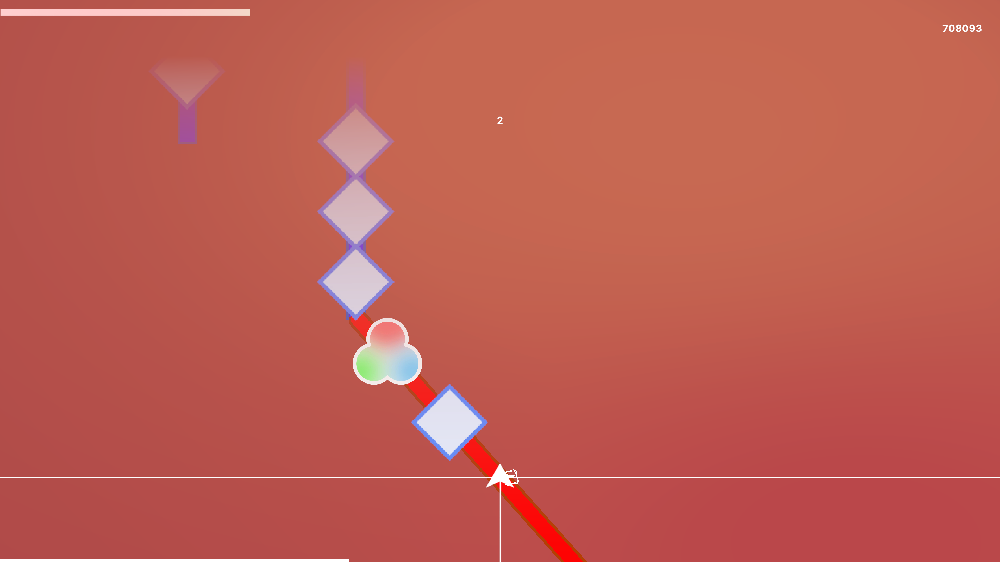

Gameplay Video.
Introduction to the game system.
Region
There are three types of Regions, which represent the color of the background: Red, Green, Blue
Line
Line also has three types

- Red lines only appear in the Red Region
- The Red Line is straight, but it can take sharp turns along the way
- But you can rest assured that the Tracker will always follow the Line

- Green line appears only in Green Region
- The green line always draws an elegant, soft curve
- Note processing is not possible if the Tracker is outside the Green Line range
- So, remember to use the arrow keys to control the Tracker so that it stays on the Line as much as possible

- The Blue Line only appears in the Blue Region
- Blue lines are straight, and multiple lines can appear at the same time
- Tracker can jump freely between lines using the arrow keys
Note
There are five types of Notes, and each has a slightly different Hit method
- The simplest note, the Single Click Note, can be hit by pressing any key except the arrow keys
- Double Clock Note can be hit by pressing any key other than the arrow keys at the same time

- Long Note can be hit continuously by holding down any key except the arrow keys
- Red Line Corner Notes appear only at the bend points of the Red Line
- If the Red Line is going from left to right, you can hit it by pressing the right arrow key
- If the Red Line is going from right to left, you can hit it by pressing the left arrow key

- This is a note that appears only at points where the color of the region changes
- Handling is the same as Single Click Note
Game Screenshots.




